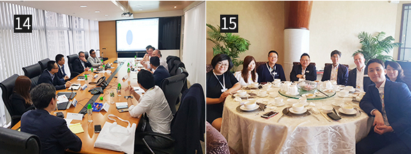

와 제 롤모델이 잡스에요!!! 아이폰 첫 출시되고 나서부터 계속 아이폰 쓰고 있는데 잡스가 너무 그리워요ㅠㅠ 지금은 돈만 벌려고 하는 것 같아서 디자인 발전도 없고ㅠㅠ와 제 롤모델이 잡스에요!!! 아이폰 첫 출시되고 나서부터 계속 아이폰 쓰고 있는데 잡스가 너무 그리워요ㅠㅠ 지금은 돈만 벌려고 하는 것 같아서 디자인 발전도 없고ㅠㅠ와 제 롤모델이 잡스에요!!! 아이폰 첫 출시되고 나서부터 계속 아이폰 쓰고 있는데 잡스가 너무 그리워요ㅠㅠ 지금은 돈만 벌려고 하는 것 같아서 디자인 발전도 없고ㅠㅠ와 제 롤모델이 잡스에요!!! 아이폰 첫 출시되고 나서부터 계속 아이폰 쓰고 있는데 잡스가 너무 그리워요ㅠㅠ 지금은 돈만 벌려고 하는 것 같아서 디자인 발전도 없고ㅠㅠ와 제 롤모델이 잡스에요!!! 아이폰 첫 출시되고 나서부터 계속 아이폰 쓰고 있는데 잡스가 너무 그리워요ㅠㅠ 지금은 돈만 벌려고 하는 것 같아서 디자인 발전도 없고ㅠㅠ
현장을 가다
‘2018 홍콩신선농산물박람회’ 단독 부스 참가
세계 신선농산물
시장을 공략한다
글·사진
강형민 대리(컨테이너리퍼영업관리팀)
현대상선이 지난 9월 5일부터 7일까지 3일간, 홍콩에서 열린 ‘2018 홍콩신선농산물박람회(Asia Fruit Logistica 2018)’에 처음으로 단독 부스 개설 후 정식 주최 자격으로 참가했다. 이에 지난 몇 달간 해당 행사를 개최하는 과정에서 경험한 이야기를 컨테이너리퍼영업관리팀 강형민 대리가 소개한다.
01행사가 열린 홍콩 아시아 월드 엑스포(AsiaWorld-Expo) 전시장 입구
02Asia Fruit Logistica 2018 행사장 입구
03,04당사 부스 전경
‘2018 홍콩신선농산물박람회(Asia Fruit Logistica 2018)’ 행사는 2007년부터 매년 9월 첫째 주 홍콩에서 열리는 신선농산물 산업 관련 아시아 최대의 박람회로서, 2017년 기준 전 세계 약 100여 개국 2만 5천여 명의 방문자와 약 60여 개국 1,000여 개의 주최자가 참가하는 국제적인 박람회이다.
이 행사는 매년 2월 베를린에서 열리는 ‘Fruit Logistica’ 그리고 5월 중국 상해에서 열리는 ‘China Fruit Logistica’와 더불어 세계 신선농산물 산업의 최신 트렌드를 보여주는 동시에 세계 각지의 여러 판매자와 바이어 그리고 물류업자 및 관련 산업군을 직통으로 연결해주는 세계 최대의 행사로 자리매김하고 있다.
매년 열리는 이 행사에는 ‘Dole’, ‘Del Monte’, ‘Zespri’ 등 세계적인 과일 업체는 물론 각 국가별 주요 신선농산물 업체들 그리고 ‘Kuehne&Nagel’, ‘Panalpina’, ‘Schenker’ 등 주요 포워더는 물론 글로벌 선사들도 빠지지 않고 참가한다. 이들은 행사를 통해 신선농산물 산업 관련 관계자들을 만나 자사 제품 및 서비스를 홍보하는 등 각종 프로모션 및 세일즈 활동을 벌이고 있다.
05~08타선사 부스 전경(MSC, Hapag-loyd, CMA-CGM/APL, ONE)
현대상선은 그동안 이러한 글로벌 행사에 방문객으로 참가해왔다. 하지만 올해는 중장기 전사적인 RF 영업 활성화 방안 및 기조에 따라 지난 6월 정식으로 신청서를 제출한 후 주최자로 등록하여 정식 부스를 개설하기로 했다. 이번 행사에는 당사를 포함한 총 9개의 선사(HMM, MSC, CMA/APL, Hapag, MSK/Hamburg SUD, COSCO, OOCL, ONE, Wanhai)가 부스를 개설하는 등 역대 최대의 선사가 참가해 서비스 프로모션 및 세일즈 활동을 하였으며, 당사 역시 전 세계에서 약 20여 명의 세일즈들이 참여해 타 선사에 뒤지지 않도록 열심히 활동하였다.
09행사 오프닝 단체 사진

10한국관 부스 전경
11Panalpina 부스 전경
사실 이러한 행사를 성공적으로 개최하기까지 많은 이들의 노력이 있었다. 준비과정은 지난 6월 행사 주최측에 참가 신청서 제출 및 승인을 받은 후 본격적으로 시작되었다. 이후 당사 행사의 중심이 될 부스 제작을 위해 여러 업체들로부터 시안을 받아 입찰을 진행하였으며, 이외 각종 홍보 브로슈어와 기념품 제작, 관련 매체 인터뷰 준비 등 당사 영업을 홍보할 방안을 기획하였다. 또 해당 행사에 직접 참가하여 당사 서비스를 홍보하고 영업활동을 할 현대상선의 글로벌 세일즈맨들을 선정한 후, 사전에 타깃 화주를 선정하여 초청장을 보내고 미팅을 잡는 등 세일즈 계획 또한 최대한 면밀하게 기획하였다.
이렇게 우리는 지난 몇 달간의 준비과정을 거쳐 드디어 지난 9월 5일부터 3일간 해당 행사에 부스를 개설하여 참가했으며, 이를 통해 포워더 및 화주는 물론 보다 다양한 업계 관계자(수출입 업자, 타 선사, 터미널 운영사, 정부 관계자 등)와 산업 전반에 걸친 다양한 네트워크를 쌓을 수 있었다. 특히 각 지역을 대표해서 온 세일즈맨들은 1일차 오프닝부터 3일차 클로징까지 각자 맡은 화주 및 업체들과의 수십 번의 미팅을 갖는 등 당사의 서비스를 집중적으로 홍보했다.
12Fruit Logistica 주최측 당사 부스 공식 방문
13Asia Fruit Magazine 인터뷰 진행

14행사 종료 후 Wrap-up 미팅 실시 (홍콩법인 회의실)
15글로벌 화주미팅 (판알피나 VP 등과 식사)
이러한 노력의 결과로 당사의 브랜드 이미지 강화는 물론이고 당사 냉동 영업의 영역 확장이라는 당면 목표를 성공적으로 달성할 수 있었다. 행사는 끝이 났지만 지금 이 순간에도 글로벌 현상인들은 이러한 목표를 위해 열심히 달려나가고 있다.
끝으로 이번 행사 준비부터 마무리까지 세세하게 준비하고 신경 써준 남중국본부의 오승우 본부장님과 신수지 과장님, 홍콩법인의 오장경 법인장님 그리고 Momoko Chan, Sam Hui를 비롯한 전 세계의 많은 동료에게 진심으로 감사의 말을 전하고 싶다.
Fruit Logistica 주최측에서 당사 부스 방문 및 취재
#Tag
- #PI추진팀 #박상훈 #디지털트랜스포메이션
-
최고예요
322
-
좋아요
322
-
슬퍼요
322
-
그저 그래요
322
-
화나요
322